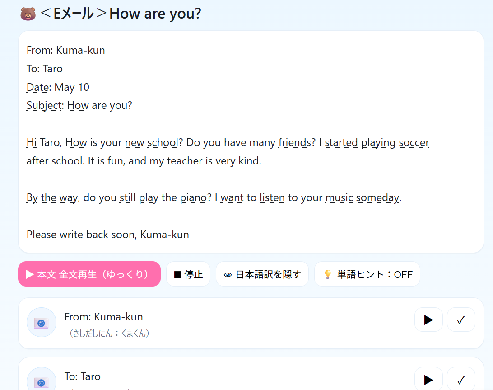

私は現在、ZEN大学で 情報と経営を中心に学修しています。
学び始めた理由は、8歳の息子がプログラミングに興味を持ち、将来ロボットエンジニアを目指しているため、親として技術的なサポートができるようになりたいと考えたことがきっかけです。
また、私自身が英語絵本や子ども向け教材の制作を行っており、「教育 × IT」を組み合わせたより良い学習コンテンツを作る力を身につけたいと思っています。
授業で学んだ HTML・CSS・JavaScript の基礎や Webデザイン、企画の知識を基に、
最近は 英検4級の長文読解が練習できる Web学習ツール を自作しました。
|  |
学歴、職歴
| 2025–現在 | ZEN大学：情報 × 経営を学修中
|
|---|